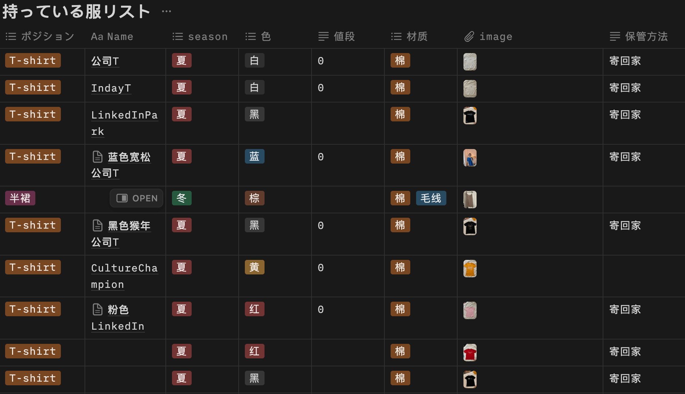

I didn't wake up one day and think, "I'll digitize my entire closet!"
It started with frustration.
I kept feeling like I had *nothing to wear*, even with drawers full of clothes.
I would shop impulsively—only to realize I already had something similar.
Putting together outfits became a guessing game.
I couldn't remember what I owned, where things were, or how much I actually had.
Sometimes I'd stand in front of my wardrobe and think, "Why is it so chaotic?"
And so I began building a digital closet.
A place where I could see everything clearly.
A place where choices became intentional.
How I Actually Built the System (So You Can Too):

1. Start with a blank Notion table.
Use the database view (not gallery or kanban—you'll need columns!).
2. Columns I used (and recommend):
- Item Type (T-shirt, Skirt, Blazer…) – as a tag
- Season (Spring, Summer…) – helps with rotation
- Color – for visual balance
- Material – cotton, linen, wool
- Image – I uploaded photos from my phone (Notion makes this super easy!)
- Storage Method – e.g., at home, in a box, with family
- Value/Price (if you remember it)
- Keep / Sell / Donate – most important for decision-making!
3. Use filters and groups.
Try filtering by "Season: Summer" + "Keep" to see what you *actually* have for the hot days ahead.
4. Add a "Maybe" tag.
For emotional pieces or ones you can't decide on, check back in 30 days.
5. Bonus tip: Create a chart (e.g., "Most Used" vs "Never Worn") if you want to go full Marie Kondo meets Google Sheets.
As I filled in the columns—198 items in total—I started seeing things clearly, maybe for the first time.
It wasn't just about managing clutter. It was about facing myself.
The duplicates. The rarely-worns. The "I swear I'll wear this someday" lies.
I realized how much space these silent, passive decisions had been taking in my brain.
I created a "Sell" and "Donate" tag.
Some pieces I gave to my family. Others I listed online.
Letting them go wasn't painful. It was… freeing.
They had already served their purpose.
But the magic was in what stayed.
I found my favorite worn-out T-shirts again, the ones that *still* make me feel most like myself.
I even discovered a few hidden gems: a cream-colored skirt I hadn't touched since 2020, now re-entering the rotation.
There's something beautiful about treating your things with intention.
Not in a "live with less" kind of way—but "live with awareness."
So yes, now my closet lives in Notion.
It's searchable, sortable, and fully mine.
And weirdly enough—it feels like a mirror.